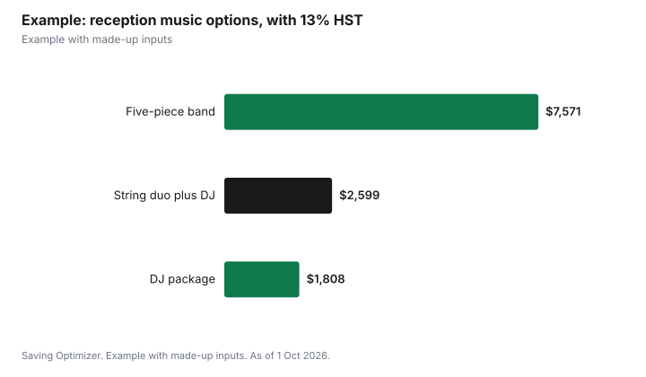

Weddings · Canada
Wedding DJ vs Live Band in Canada: Costs and Trade-Offs
A DJ usually costs less than a live band and can play any song in its original recording; a band costs more because you pay several musicians, plus their space, power, breaks and meals, but it gives the reception a live-concert feel. A common compromise is ceremony musicians or a small band for dinner and a DJ for dancing. Music also carries licensing fees: Re:Sound's Tariff 5.B charges $9.25 to $78.66 per reception for recorded music, depending on room size and whether there is dancing, usually handled by the venue, and SOCAN charges a separate fee. Outdoors, check local noise limits, such as Toronto's 50 dB(A) limit after 11 p.m.
Key takeaways
- DJ: lower cost, small footprint, any song.
- Band: higher cost, more space and power, breaks and meals for each musician.
- Hybrid: live ceremony or dinner music plus a DJ for dancing.
- Re:Sound Tariff 5.B: $9.25 to $78.66 per reception for recorded music, by room size and dancing.
- Outdoor events: check noise bylaws and end times.
- Example with made-up inputs: DJ, band and hybrid compared.
How each prices
| Item | DJ | Live band |
|---|---|---|
| Basis | Hours of play, sometimes a package | Number of musicians and sets |
| Equipment | Speakers, mixer, microphones, lights | Full backline, PA, often a sound tech |
| Setup time | Shorter | Longer; load-in and soundcheck |
| Breaks | Few; music continues | Sets with breaks; playlist in between |
| Meals | One or two people | Every musician and crew member |
| Song range | Any recording | Repertoire plus learned requests |
Sound, space and power
A DJ needs a table, a couple of power outlets and room for speakers. A band needs a stage area sized for its players, more power, and time to load in and soundcheck, which some venues limit. Ask the venue for the stage or dance-floor dimensions, power locations, load-in times and any sound limits. Some venues cap volume or require music to stop at a set hour; the Gardiner Museum in Toronto, for example, notes that its balconies may close after 11 p.m. to meet city noise bylaws.
Noise rules for outdoor weddings
For tents and backyards, municipal noise bylaws apply. Toronto's bylaw says amplified sound may not exceed 55 dB(A) from 7 a.m. to 11 p.m., or 50 dB(A) from 11 p.m. to 7 a.m., when measured in a neighbour's outdoor living area over 10 minutes. Ask your DJ or band to keep levels reasonable, aim speakers away from neighbours and plan to end loud music by 11 p.m. or move inside. Other municipalities set their own limits.
Music licensing
Playing recorded music at a reception requires public performance licences. Re:Sound's Tariff 5.B covers recorded music at receptions, including wedding receptions, and is charged per event by room capacity and whether there is dancing. The venue or event operator usually reports and pays it. SOCAN charges a separate tariff for the music itself. If you rent an unlicensed space, such as a hall or private property, ask the owner who is responsible, and if it falls to you, the per-event fees above are small next to the cost of the entertainment itself.
| Room capacity | Without dancing | With dancing |
|---|---|---|
| 1 to 100 | $9.25 | $18.51 |
| 101 to 300 | $13.30 | $26.63 |
| 301 to 500 | $27.76 | $55.52 |
| Over 500 | $39.33 | $78.66 |
Ceremony music
Ceremony music is often separate: a solo guitarist, string duo or pianist for the ceremony and cocktail hour, or a playlist run by the DJ through the venue's sound system. If the ceremony is in a different room or outdoors, ask the DJ to provide a separate small speaker setup and a microphone for the officiant. Plan the processional, signing and recessional songs, and time them.
Hybrid options
- Live ceremony musicians, then a DJ for the reception.
- A small acoustic group during cocktails and dinner, then a DJ.
- A band for two sets, with the DJ covering breaks and late night.
- A DJ with a live saxophonist or percussionist for the dance set.
Planning the evening
Whoever you hire often acts as master of ceremonies, so agree on who announces entrances, speeches, the cake cutting and the last dance. Share a timeline with the DJ or bandleader, the venue coordinator and the photographer so key moments are not missed. Give pronunciation notes for names. Decide how much control you want: a short must-play list and a do-not-play list usually work better than a full playlist, which leaves no room to read the crowd.
Watch a full live set or a long unedited video before booking. Promotional clips show highlights; a full set shows how they handle transitions, volume and an empty dance floor. Ask how they adapt to an older crowd at dinner and a younger crowd later, and how they handle requests from guests on the night.
Contracts
- Start and end times, overtime rate and setup time.
- Number of musicians and what happens if one is ill.
- Equipment provided, including microphones for speeches.
- Do-not-play and must-play lists.
- Meals, breaks and a place to change.
- Deposit, payment schedule and cancellation terms.
- Liability insurance if the venue requires it.
Decision guide
| If you... | Consider |
|---|---|
| Have a tight budget or small room | DJ |
| Want a live, concert feel | Band |
| Want specific original recordings | DJ |
| Want live music but also a full dance playlist | Hybrid |
| Have an outdoor venue with neighbours | DJ with volume control and an early end |
Example with made-up inputs
These numbers are an example with made-up inputs. A five-hour reception: a DJ package with ceremony sound and lighting for $1,600; a five-piece band for three sets for $6,500 plus five musician meals at $40, $6,700; a hybrid of a string duo for the ceremony and cocktails at $900 and a DJ for $1,400, $2,300. With 13% HST: $1,808, $7,571 and $2,599. The venue's music licence for a 200-capacity room with dancing would be $26.63 under Re:Sound's tariff, plus the separate SOCAN fee, typically on the venue's side.
| Option | Before tax | With HST |
|---|---|---|
| DJ package | $1,600 | $1,808 |
| Five-piece band with meals | $6,700 | $7,571 |
| String duo plus DJ | $2,300 | $2,599 |

Steps
- Ask the venue about space, power, end times and sound limits.
- Decide on ceremony music separately.
- Get quotes from DJs and bands for the same hours.
- Watch full live sets, not only promo clips.
- Agree on playlists and announcements.
- Confirm contracts, meals and insurance.
Common mistakes
- Booking a band the room cannot fit.
- Forgetting musician meals and breaks.
- Ignoring noise limits at outdoor venues.
- No microphone plan for speeches.
- Missing overtime rates in the contract.
Related: is a videographer worth it and venue types and costs.
Sources
- Re:Sound Music Licensing Company, Tariffs: Tariff 5.B Receptions, Conventions, Assemblies and Fashion Shows, resound.ca, as of 1 Oct 2026.
- City of Toronto, Noise bylaw: amplified and musical instrument sounds, toronto.ca, as of 1 Oct 2026.
- Gardiner Museum, Events Package, January 2026, gardinermuseum.on.ca, as of 1 Oct 2026.
- Canada Revenue Agency, GST/HST rates, canada.ca, as of 1 Oct 2026.
- DJ, band and musician prices in the example are made-up inputs.
Frequently asked questions
Is a DJ cheaper than a live band for a wedding?
Usually, because you pay fewer people and need less equipment, space and meals.
Who pays music licensing fees at a wedding reception?
Usually the venue or event operator. Re:Sound's Tariff 5.B fee is $9.25 to $78.66 per event, and SOCAN charges separately.
What are Toronto's noise limits for outdoor wedding music?
Amplified sound heard in a neighbour's outdoor living area may not exceed 55 dB(A) from 7 a.m. to 11 p.m. or 50 dB(A) overnight.
Can we have both a band and a DJ?
Yes. A common hybrid is live ceremony or dinner music and a DJ for dancing.
Do musicians need meals?
Ask; some contracts require meals and breaks for each musician.
Who provides microphones for speeches?
Often the DJ or band. Confirm it in the contract.
Researched and drafted with AI assistance and fact-checked against official Canadian sources. How we create content.
Disclosure: Saving Optimizer may earn a commission if a partner link is added later. No partnership is claimed on this page. Education only.